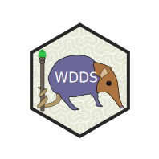

Extract Project Metadata from DOI
Source:R/extract_metadata_from_doi.R
extract_metadata_from_doi.RdSome works are explicitly connected to a publication and the metadata for that publication are fairly complete. Instead of re-writing the metadata, it would be better to extract it and transform it.
See also
Other Project Metadata:
expand_tidy_dfs(),
extract_metadata_oa(),
generate_metadata_csv(),
generate_repeat_dfs(),
make_simple_df()
Examples
doi <-"doi.org/10.1038/s41597-025-05332-x"
extract_metadata_from_doi(doi = doi,write_output=FALSE)
#> Group Variable
#> 1 Creators 1 Name
#> 2 Family Name
#> 3 Given Name
#> 4 Name Identifier
#> 5 Affiliation
#> 6 Affiliation Identifier
#> 7 Creators 2 Name
#> 8 Family Name
#> 9 Given Name
#> 10 Name Identifier
#> 11 Affiliation
#> 12 Affiliation Identifier
#> 13 Creators 3 Name
#> 14 Family Name
#> 15 Given Name
#> 16 Name Identifier
#> 17 Affiliation
#> 18 Affiliation Identifier
#> 19 Creators 4 Name
#> 20 Family Name
#> 21 Given Name
#> 22 Name Identifier
#> 23 Affiliation
#> 24 Affiliation Identifier
#> 25 Creators 5 Name
#> 26 Family Name
#> 27 Given Name
#> 28 Name Identifier
#> 29 Affiliation
#> 30 Affiliation Identifier
#> 31 Creators 6 Name
#> 32 Family Name
#> 33 Given Name
#> 34 Name Identifier
#> 35 Affiliation
#> 36 Affiliation Identifier
#> 37 Creators 7 Name
#> 38 Family Name
#> 39 Given Name
#> 40 Name Identifier
#> 41 Affiliation
#> 42 Affiliation Identifier
#> 43 Creators 8 Name
#> 44 Family Name
#> 45 Given Name
#> 46 Name Identifier
#> 47 Affiliation
#> 48 Affiliation Identifier
#> 49 Creators 9 Name
#> 50 Family Name
#> 51 Given Name
#> 52 Name Identifier
#> 53 Affiliation
#> 54 Affiliation Identifier
#> 55 Creators 10 Name
#> 56 Family Name
#> 57 Given Name
#> 58 Name Identifier
#> 59 Affiliation
#> 60 Affiliation Identifier
#> 61 Creators 11 Name
#> 62 Family Name
#> 63 Given Name
#> 64 Name Identifier
#> 65 Affiliation
#> 66 Affiliation Identifier
#> 67 Creators 12 Name
#> 68 Family Name
#> 69 Given Name
#> 70 Name Identifier
#> 71 Affiliation
#> 72 Affiliation Identifier
#> 73 Creators 13 Name
#> 74 Family Name
#> 75 Given Name
#> 76 Name Identifier
#> 77 Affiliation
#> 78 Affiliation Identifier
#> 79 Creators 14 Name
#> 80 Family Name
#> 81 Given Name
#> 82 Name Identifier
#> 83 Affiliation
#> 84 Affiliation Identifier
#> 85 Creators 15 Name
#> 86 Family Name
#> 87 Given Name
#> 88 Name Identifier
#> 89 Affiliation
#> 90 Affiliation Identifier
#> 91 Creators 16 Name
#> 92 Family Name
#> 93 Given Name
#> 94 Name Identifier
#> 95 Affiliation
#> 96 Affiliation Identifier
#> 97 Creators 17 Name
#> 98 Family Name
#> 99 Given Name
#> 100 Name Identifier
#> 101 Affiliation
#> 102 Affiliation Identifier
#> 103 Creators 18 Name
#> 104 Family Name
#> 105 Given Name
#> 106 Name Identifier
#> 107 Affiliation
#> 108 Affiliation Identifier
#> 109 Creators 19 Name
#> 110 Family Name
#> 111 Given Name
#> 112 Name Identifier
#> 113 Affiliation
#> 114 Affiliation Identifier
#> 115 Creators 20 Name
#> 116 Family Name
#> 117 Given Name
#> 118 Name Identifier
#> 119 Affiliation
#> 120 Affiliation Identifier
#> 121 Creators 21 Name
#> 122 Family Name
#> 123 Given Name
#> 124 Name Identifier
#> 125 Affiliation
#> 126 Affiliation Identifier
#> 127 Creators 22 Name
#> 128 Family Name
#> 129 Given Name
#> 130 Name Identifier
#> 131 Affiliation
#> 132 Affiliation Identifier
#> 133 Creators 23 Name
#> 134 Family Name
#> 135 Given Name
#> 136 Name Identifier
#> 137 Affiliation
#> 138 Affiliation Identifier
#> 139 Creators 24 Name
#> 140 Family Name
#> 141 Given Name
#> 142 Name Identifier
#> 143 Affiliation
#> 144 Affiliation Identifier
#> 145 Creators 25 Name
#> 146 Family Name
#> 147 Given Name
#> 148 Name Identifier
#> 149 Affiliation
#> 150 Affiliation Identifier
#> 151 Creators 26 Name
#> 152 Family Name
#> 153 Given Name
#> 154 Name Identifier
#> 155 Affiliation
#> 156 Affiliation Identifier
#> 157 Titles 1 title
#> 158 publicationYear publicationYear
#> 159 language language
#> 160 Descriptions 1 Description
#> 161 Description Type
#> 162 Funding References 1 Funder Name
#> 163 Funder Identifier
#> 164 Award Number
#> 165 Award URI
#> 166 Award ID
#> 167 Funding References 2 Funder Name
#> 168 Funder Identifier
#> 169 Award Number
#> 170 Award URI
#> 171 Award ID
#> 172 Subjects 1 Subject
#> 173 Subjects 2 Subject
#> 174 Subjects 3 Subject
#> 175 Subjects 4 Subject
#> 176 Related Identifiers 1 Related Identifier
#> 177 Related Identifier Type
#> 178 Relation Type
#> Value
#> 1 Collin J Schwantes
#> 2 Schwantes
#> 3 Collin J
#> 4 https://orcid.org/0000-0002-9882-941X
#> 5 Department of Epidemiology of Microbial Diseases, Yale University, New Haven, CT, USA. collin.schwantes@yale.edu.
#> 6 https://ror.org/03v76x132
#> 7 Cecilia A Sánchez
#> 8 Sánchez
#> 9 Cecilia A
#> 10 https://orcid.org/0000-0002-1141-6816
#> 11 Department of Epidemiology of Microbial Diseases, Yale University, New Haven, CT, USA. cecilia.sanchez@yale.edu.
#> 12 https://ror.org/03v76x132
#> 13 Tess Stevens
#> 14 Stevens
#> 15 Tess
#> 16 <NA>
#> 17 Center for Global Health Science and Security, Georgetown University, Washington, DC, USA.
#> 18 https://ror.org/05vzafd60
#> 19 Ryan Zimmerman
#> 20 Zimmerman
#> 21 Ryan
#> 22 https://orcid.org/0000-0002-4376-7418
#> 23 Center for Global Health Science and Security, Georgetown University, Washington, DC, USA.
#> 24 https://ror.org/05vzafd60
#> 25 Greg Albery
#> 26 Albery
#> 27 Greg
#> 28 https://orcid.org/0000-0001-6260-2662
#> 29 Department of Biology, Georgetown University, Washington, DC, USA.
#> 30 https://ror.org/05vzafd60
#> 31 Daniel J Becker
#> 32 Becker
#> 33 Daniel J
#> 34 https://orcid.org/0000-0003-4315-8628
#> 35 School of Biological Sciences, University of Oklahoma, Norman, OK, USA.
#> 36 https://ror.org/02aqsxs83
#> 37 Cole B Brookson
#> 38 Brookson
#> 39 Cole B
#> 40 https://orcid.org/0000-0003-1237-4096
#> 41 Department of Epidemiology of Microbial Diseases, Yale University, New Haven, CT, USA.
#> 42 https://ror.org/03v76x132
#> 43 Rebekah C Kading
#> 44 Kading
#> 45 Rebekah C
#> 46 https://orcid.org/0000-0002-4996-915X
#> 47 Center for Vector-borne Infectious Diseases, Department of Microbiology, Immunology, and Pathology, Colorado State University, Fort Collins, CO, USA.
#> 48 https://ror.org/03k1gpj17
#> 49 Carl N Keiser
#> 50 Keiser
#> 51 Carl N
#> 52 https://orcid.org/0000-0002-4936-7810
#> 53 Emerging Pathogens Institute, University of Florida, Gainesville, FL, USA.
#> 54 https://ror.org/02y3ad647
#> 55 Shashank Khandelwal
#> 56 Khandelwal
#> 57 Shashank
#> 58 <NA>
#> 59 Blue Tiger, LLC, Timonium, MD, USA.
#> 60 https://ror.org/01mzcg363
#> 61 Stephanie Kramer-Schadt
#> 62 Kramer-Schadt
#> 63 Stephanie
#> 64 https://orcid.org/0000-0002-9269-4446
#> 65 Department of Ecological Dynamics, Leibniz Institute for Zoo and Wildlife Research, Berlin, Germany.
#> 66 https://ror.org/05nywn832
#> 67 Raphael Krut-Landau
#> 68 Krut-Landau
#> 69 Raphael
#> 70 <NA>
#> 71 Blue Tiger, LLC, Timonium, MD, USA.
#> 72 https://ror.org/01mzcg363
#> 73 Clifton McKee
#> 74 McKee
#> 75 Clifton
#> 76 https://orcid.org/0000-0002-6149-0598
#> 77 Department of Epidemiology, Johns Hopkins Bloomberg School of Public Health, Baltimore, MD, USA.
#> 78 https://ror.org/00za53h95
#> 79 Diego Montecino-Latorre
#> 80 Montecino-Latorre
#> 81 Diego
#> 82 https://orcid.org/0000-0002-5009-5939
#> 83 Wildlife Conservation Society, Health Program, New York, NY, USA.
#> 84 https://ror.org/01xnsst08
#> 85 Zoe O'Donoghue
#> 86 O'Donoghue
#> 87 Zoe
#> 88 <NA>
#> 89 Department of Epidemiology of Microbial Diseases, Yale University, New Haven, CT, USA.
#> 90 https://ror.org/03v76x132
#> 91 Sarah H Olson
#> 92 Olson
#> 93 Sarah H
#> 94 https://orcid.org/0000-0002-8484-9006
#> 95 Wildlife Conservation Society, Health Program, New York, NY, USA.
#> 96 https://ror.org/01xnsst08
#> 97 Mika O'Shea
#> 98 O'Shea
#> 99 Mika
#> 100 <NA>
#> 101 Department of Ecology and Evolutionary Biology, Tulane University, New Orleans, LA, USA.
#> 102 https://ror.org/04vmvtb21
#> 103 Timothée Poisot
#> 104 Poisot
#> 105 Timothée
#> 106 https://orcid.org/0000-0002-0735-5184
#> 107 Département de Sciences Biologiques, Université de Montréal, Montreal, QC, Canada.
#> 108 https://ror.org/0161xgx34
#> 109 Hailey Robertson
#> 110 Robertson
#> 111 Hailey
#> 112 https://orcid.org/0009-0007-2988-307X
#> 113 Department of Epidemiology of Microbial Diseases, Yale University, New Haven, CT, USA.
#> 114 https://ror.org/03v76x132
#> 115 Sadie J Ryan
#> 116 Ryan
#> 117 Sadie J
#> 118 https://orcid.org/0000-0002-4308-6321
#> 119 Emerging Pathogens Institute, University of Florida, Gainesville, FL, USA.
#> 120 https://ror.org/02y3ad647
#> 121 Stephanie N Seifert
#> 122 Seifert
#> 123 Stephanie N
#> 124 https://orcid.org/0000-0002-4397-6156
#> 125 Paul G. Allen School for Global Health, University of Washington, Pullman, WA, USA.
#> 126 https://ror.org/00cvxb145
#> 127 David Simons
#> 128 Simons
#> 129 David
#> 130 <NA>
#> 131 Department of Anthropology, Pennsylvania State University, State College, PA, USA.
#> 132 https://ror.org/04p491231
#> 133 Amanda Vicente-Santos
#> 134 Vicente-Santos
#> 135 Amanda
#> 136 https://orcid.org/0000-0001-6012-2059
#> 137 School of Biological Sciences, University of Oklahoma, Norman, OK, USA.
#> 138 https://ror.org/02aqsxs83
#> 139 Chelsea L Wood
#> 140 Wood
#> 141 Chelsea L
#> 142 https://orcid.org/0000-0003-2738-3139
#> 143 School of Aquatic and Fishery Sciences, University of Washington, Seattle, WA, USA.
#> 144 https://ror.org/00cvxb145
#> 145 Ellie Graeden
#> 146 Graeden
#> 147 Ellie
#> 148 https://orcid.org/0000-0002-1265-9756
#> 149 Center for Global Health Science and Security, Georgetown University, Washington, DC, USA.
#> 150 https://ror.org/05vzafd60
#> 151 Colin J Carlson
#> 152 Carlson
#> 153 Colin J
#> 154 https://orcid.org/0000-0001-6960-8434
#> 155 Department of Epidemiology of Microbial Diseases, Yale University, New Haven, CT, USA. colin.carlson@yale.edu.
#> 156 https://ror.org/03v76x132
#> 157 A minimum data standard for wildlife disease research and surveillance
#> 158 2025
#> 159 en
#> 160 FILL ME IN
#> 161 abstract
#> 162 National Science Foundation
#> 163 https://ror.org/021nxhr62
#> 164 2515340
#> 165
#> 166
#> 167 National Science Foundation
#> 168 https://ror.org/021nxhr62
#> 169 2213854
#> 170
#> 171
#> 172 Data Sharing
#> 173 Wildlife disease
#> 174 Best practice
#> 175 Table (database)
#> 176 A valid Identifier like a DOI
#> 177 see accepted values here https://datacite-metadata-schema.readthedocs.io/en/4.5/appendices/appendix-1/relatedIdentifierType/#relatedidentifiertype
#> 178 see accepted values here: https://datacite-metadata-schema.readthedocs.io/en/4.5/appendices/appendix-1/relationType/#relationtype